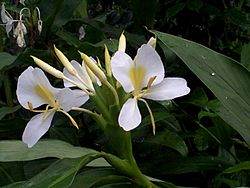

埔墘國小生態園導覽系統
埔墘國小生態園導覽系統
埔墘國小生態園導覽系統
野薑花---野地天使
科別:薑科
你嘗過新竹內灣有名的野薑花粽嗎？野薑花跟我們食用的「薑」有什麼關係呢？ 夏、秋時節，我們常能在台灣低海拔的山野郊區的溪邊、埤塘或濕地附近，聞到野薑花的芬芳。別以為他是台灣土生土長的「原生植物」喔！其實它是從熱帶亞洲，例如印度、馬來西亞等地引進台灣的呢！因為它很適應台灣的氣候，因此「歸化」為台灣濕地植群的一份子。
野薑花別名很多，較常見的有蝴蝶薑、薑花、穗花山奈、立笈等，跟我們常吃的薑，還有中藥「山奈」，同樣都是薑科的植物，是多年生草本，它的地下莖也是塊狀，並有芳香。它的花期很長，五月到十一月都可看到。它那潔白寬闊的瓣片並不是花瓣，而是一種特異的瓣化雄蕊，具有美化的功能。你看到兩側展開的「花瓣」，還有中間寬大、二裂的「唇瓣」，事實上都是由雄蕊退化而成；至於唯一一枚有生殖能力的雄蕊，則和柱頭合生。乍看之下，野薑花的花朵，有如白色蝴蝶翩翩飛舞於綠葉之間，因此又有「蝴蝶薑」的美稱。
野薑花雖然擅於開花，卻不善於結果，能夠在整排群落中找到一、兩顆長成的果實就算難能可貴了。果實成熟後三瓣列，露出深紅色的種子，可用來播種育苗。
 充電區
充電區
●學名:Hedychium coronarium Koenig
●科名:薑科 Zingiberaceae
●原產地:熱帶亞洲
●別名:蝴蝶薑、薑花、穗花山奈、立笈
●花:薑花的嫩芽及花可供食用，花曬乾之後可泡茶飲用，亦因薑花帶有獨特的香味，能提煉出芳香精油作香水製造材料，亦可從花苞中提煉出膠狀萃取物供製作洗髮精。
●葉:用葉包裹成野薑花粽。
●莖:夏威夷茂伊島居民運用薑花的乾燥莖部磨成粉末，加入按摩油中，作為身體美容之用。
●根:台灣客家部落利用薑花的乾燥根部磨成的粉末作食材。
圖片

參考資料:
維基百科(https://zh.wikipedia.org)
中央研究院數位典藏資源網(http://digiarch.sinica.edu.tw/)
意見回饋
建議使用Google Chrome瀏覽